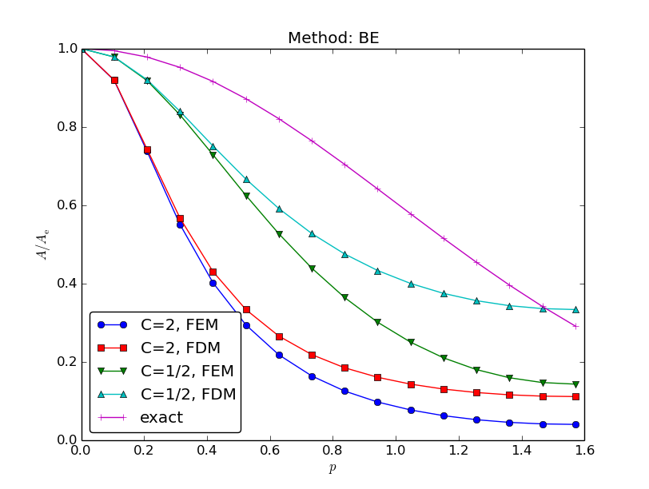

$$
\newcommand{\half}{\frac{1}{2}}
\newcommand{\uex}{{u_{\small\mbox{e}}}}
\newcommand{\Aex}{{A_{\small\mbox{e}}}}
\newcommand{\x}{\boldsymbol{x}}
\newcommand{\dfc}{\alpha} % diffusion coefficient
\newcommand{\If}{\mathcal{I}_s} % for FEM
\newcommand{\Ifb}{{I_b}} % for FEM
\newcommand{\basphi}{\varphi}
\newcommand{\baspsi}{\psi}
\newcommand{\xno}[1]{x_{#1}}
\newcommand{\dx}{\, \mathrm{d}x}
\newcommand{\ds}{\, \mathrm{d}s}
$$
Study guide: Time-dependent problems and variational forms
Hans Petter Langtangen [1, 2]
[1] Center for Biomedical Computing, Simula Research Laboratory
[2] Department of Informatics, University of Oslo
Oct 16, 2015
Table of contents
Time-dependent problems
Example: diffusion problem
A Forward Euler scheme; ideas
A Forward Euler scheme; stages in the discretization
A Forward Euler scheme; weighted residual (or Galerkin) principle
A Forward Euler scheme; integration by parts
New notation for the solution at the most recent time levels
Deriving the linear systems
Structure of the linear systems
Computational algorithm
Comparing P1 elements with the finite difference method; ideas
Comparing P1 elements with the finite difference method; results
Discretization in time by a Backward Euler scheme
The variational form of the time-discrete problem
Calculations with P1 elements in 1D
Dirichlet boundary conditions
Boundary function
Finite element basis functions
Modification of the linear system; the raw system
Modification of the linear system; setting Dirichlet conditions
Modification of the linear system; Backward Euler example
Analysis of the discrete equations
Handy formulas
Amplification factor for the Forward Euler method; results
Amplification factor for the Backward Euler method; results
Amplification factors for smaller time steps; Forward Euler
Amplification factors for smaller time steps; Backward Euler
Time-dependent problems
- So far: used the finite element framework for discretizing in space
- What about \( u_t = u_{xx} + f \)?
- Use finite differences in time to obtain a set of recursive spatial
problems
- Solve the spatial problems by the finite element method
Example: diffusion problem
$$
\begin{align*}
\frac{\partial u}{\partial t} &= \dfc\nabla^2 u + f(\x, t),\quad
&\x\in\Omega, t\in (0,T]\\
u(\x, 0) & = I(\x),\quad &\x\in\Omega\\
\frac{\partial u}{\partial n} &= 0,\quad &\x\in\partial\Omega,\ t\in (0,T]
\end{align*}
$$
A Forward Euler scheme; ideas
$$
\begin{equation*}
[D_t^+ u = \dfc\nabla^2 u + f]^n,\quad n=1,2,\ldots,N_t-1
\end{equation*}
$$
Solving wrt \( u^{n+1} \):
$$
\begin{equation*}
u^{n+1} = u^n + \Delta t \left( \dfc\nabla^2 u^n + f(\x, t_n)\right)
\end{equation*}
$$
- \( u^n = \sum_jc_j^n\baspsi_j\, \in V \),
\( u^{n+1} = \sum_jc_j^{n+1}\baspsi_j\,\in V \)
- Compute \( u^0 \) from \( I \)
- Compute \( u^{n+1} \) from \( u^n \) by solving the PDE for \( u^{n+1} \)
at each time level
A Forward Euler scheme; stages in the discretization
- \( \uex(\x,t) \): exact solution of the PDE problem
- \( \uex^n(\x) \): exact solution of time-discrete problem (after applying
a finite difference scheme in time)
- \( \uex^n(\x)\approx u^n = \sum_{j\in\If}c_j^n\baspsi_j = \)
solution of the time- and space-discrete problem
(after applying a Galerkin method in space)
$$
\begin{equation*}
\frac{\partial \uex}{\partial t} = \dfc\nabla^2 \uex + f(\x, t)
\end{equation*}
$$
$$
\begin{equation*}
\uex^{n+1} = \uex^n + \Delta t \left( \dfc\nabla^2 \uex^n + f(\x, t_n)\right)
\end{equation*}
$$
$$
\uex^n \approx u^n = \sum_{j=0}^{N} c_j^{n}\baspsi_j(\x),\quad
\uex^{n+1} \approx u^{n+1} = \sum_{j=0}^{N} c_j^{n+1}\baspsi_j(\x)
$$
$$ R = u^{n+1} - u^n - \Delta t \left( \dfc\nabla^2 u^n + f(\x, t_n)\right)$$
A Forward Euler scheme; weighted residual (or Galerkin) principle
$$ R = u^{n+1} - u^n - \Delta t \left( \dfc\nabla^2 u^n + f(\x, t_n)\right)$$
The weighted residual principle:
$$ \int_\Omega Rw\dx = 0,\quad \forall w\in W$$
results in
$$
\int_\Omega
\left\lbrack
u^{n+1} - u^n - \Delta t \left( \dfc\nabla^2 u^n + f(\x, t_n)\right)
\right\rbrack w \dx =0, \quad \forall w \in W
$$
Galerkin: \( W=V \), \( w=v \)
A Forward Euler scheme; integration by parts
Isolating the unknown \( u^{n+1} \) on the left-hand side:
$$
\int_{\Omega} u^{n+1}\baspsi_i\dx = \int_{\Omega}
\left\lbrack u^n + \Delta t \left( \dfc\nabla^2 u^n + f(\x, t_n)\right)
\right\rbrack v\dx
$$
Integration by parts of \( \int\dfc(\nabla^2 u^n) v\dx \):
$$ \int_{\Omega}\dfc(\nabla^2 u^n)v \dx =
-\int_{\Omega}\dfc\nabla u^n\cdot\nabla v\dx +
\underbrace{\int_{\partial\Omega}\dfc\frac{\partial u^n}{\partial n}v \dx}_{=0\quad\Leftarrow\quad\partial u^n/\partial n=0}
$$
Variational form:
$$
\begin{equation*}
\int_{\Omega} u^{n+1} v\dx =
\int_{\Omega} u^n v\dx -
\Delta t \int_{\Omega}\dfc\nabla u^n\cdot\nabla v\dx +
\Delta t\int_{\Omega}f^n v\dx,\quad\forall v\in V
\end{equation*}
$$
New notation for the solution at the most recent time levels
- \( u \) and
u: the spatial unknown function to be computed
- \( u_1 \) and
u_1: the spatial function at the previous time level \( t-\Delta t \)
- \( u_2 \) and
u_2: the spatial function at \( t-2\Delta t \)
- This new notation gives close correspondence between code and math
$$
\begin{equation*}
\int_{\Omega} u v\dx =
\int_{\Omega} u_1 v\dx -
\Delta t \int_{\Omega}\dfc\nabla u_1\cdot\nabla v\dx +
\Delta t\int_{\Omega}f^n v\dx
\end{equation*}
$$
or shorter
$$
\begin{equation*}
(u,v) = (u_1,v) -
\Delta t (\dfc\nabla u_1,\nabla v) +
(f^n, v)
\end{equation*}
$$
Deriving the linear systems
- \( u = \sum_{j=0}^{N}c_j\baspsi_j(\x) \)
- \( u_1 = \sum_{j=0}^{N} c_{1,j}\baspsi_j(\x) \)
- \( \forall v\in V \): for \( v=\baspsi_i \), \( i=0,\ldots,N \)
Insert these in
$$
(u, \baspsi_i) = (u_1,\baspsi_i) -
\Delta t (\dfc\nabla u_1,\nabla\baspsi_i) +
(f^n,\baspsi_i)
$$
and order terms as matrix-vector products (\( \quad i=0,\ldots,N \)):
$$
\begin{equation*}
\sum_{j=0}^{N} \underbrace{(\baspsi_i,\baspsi_j)}_{M_{i,j}} c_j =
\sum_{j=0}^{N} \underbrace{(\baspsi_i,\baspsi_j)}_{M_{i,j}} c_{1,j}
-\Delta t \sum_{j=0}^{N}
\underbrace{(\nabla\baspsi_i,\dfc\nabla\baspsi_j)}_{K_{i,j}} c_{1,j}
+ (f^n,\baspsi_i)
\end{equation*}
$$
Structure of the linear systems
$$
\begin{equation*}
Mc = Mc_1 - \Delta t Kc_1 + f
\end{equation*}
$$
$$
\begin{align*}
M &= \{M_{i,j}\},\quad M_{i,j}=(\baspsi_i,\baspsi_j),\quad i,j\in\If\\
K &= \{K_{i,j}\},\quad K_{i,j}=(\nabla\baspsi_i,\dfc\nabla\baspsi_j),\quad i,j\in\If\\
f &= \{(f(\x,t_n),\baspsi_i)\}_{i\in\If}\\
c &= \{c_i\}_{i\in\If}\\
c_1 &= \{c_{1,i}\}_{i\in\If}
\end{align*}
$$
Computational algorithm
- Compute \( M \) and \( K \).
- Initialize \( u^0 \) by either interpolation or projection
- For \( n=1,2,\ldots,N_t \):
- compute \( b = Mc_1 - \Delta t Kc_1 + f \)
- solve \( Mc = b \)
- set \( c_1 = c \)
Initial condition:
- Either interpolation: \( c_{1,j} = I(\x_j) \) (finite elements)
- Or projection: solve \( \sum_j M_{i,j}c_{1,j} = (I,\baspsi_i) \), \( i\in\If \)
Comparing P1 elements with the finite difference method; ideas
- P1 elements in 1D
- Uniform mesh on \( [0,L] \) with cell length \( h \)
- No Dirichlet conditions: \( \baspsi_i=\basphi_i \), \( i=0,\ldots,N=N_n-1 \)
- Have found formulas for \( M \) and \( K \) at the element level
- Have assembled the global matrices
- Have developed corresponding finite difference operator formulas
- \( M \): \( h[D_t^+(u + \frac{1}{6}h^2D_xD_x u)]^n_i \)
- \( K \): \( h[\dfc D_xD_x u]^n_i \)
Comparing P1 elements with the finite difference method; results
Diffusion equation with finite elements is equivalent to
$$
\begin{equation*}
[D_t^+(u + \frac{1}{6}h^2D_xD_x u) = \dfc D_xD_x u + f]^n_i
\end{equation*}
$$
Can lump the mass matrix by Trapezoidal integration and get
the standard finite difference scheme
$$
\begin{equation*}
[D_t^+u = \dfc D_xD_x u + f]^n_i
\end{equation*}
$$
Discretization in time by a Backward Euler scheme
Backward Euler scheme in time:
$$
[D_t^- u = \dfc\nabla^2 u + f(\x, t)]^n
$$
$$
\begin{equation*}
\uex^{n} - \Delta t \left( \dfc\nabla^2 \uex^n + f(\x, t_{n})\right) =
\uex^{n-1}
\end{equation*}
$$
$$ \uex^n \approx u^n = \sum_{j=0}^{N} c_j^{n}\baspsi_j(\x),\quad
\uex^{n+1} \approx u^{n+1} = \sum_{j=0}^{N} c_j^{n+1}\baspsi_j(\x)$$
The variational form of the time-discrete problem
$$
\begin{equation*}
\int_{\Omega} \left( u^{n}v
+ \Delta t \dfc\nabla u^n\cdot\nabla v\right)\dx
= \int_{\Omega} u^{n-1} v\dx -
\Delta t\int_{\Omega}f^n v\dx,\quad\forall v\in V
\end{equation*}
$$
or
$$
\begin{equation*}
(u,v)
+ \Delta t (\dfc\nabla u,\nabla v)
= (u_1,v) +
\Delta t (f^n,\baspsi_i)
\end{equation*}
$$
The linear system: insert \( u=\sum_j c_j\baspsi_i \) and \( u_1=\sum_j c_{1,j}\baspsi_i \),
$$
\begin{equation*}
(M + \Delta t \dfc K)c = Mc_1 + f
\end{equation*}
$$
Calculations with P1 elements in 1D
Can interpret the resulting equation system as
$$
\begin{equation*}
[D_t^-(u + \frac{1}{6}h^2D_xD_x u) = \dfc D_xD_x u + f]^n_i
\end{equation*}
$$
Lumped mass matrix (by Trapezoidal integration) gives a standard
finite difference method:
$$
\begin{equation*}
[D_t^- u = \dfc D_xD_x u + f]^n_i
\end{equation*}
$$
Dirichlet boundary conditions
Dirichlet condition at \( x=0 \) and Neumann condition at \( x=L \):
$$
\begin{align*}
u(\x,t) &= u_0(\x,t),\quad & \x\in\partial\Omega_D\\
-\dfc\frac{\partial}{\partial n} u(\x,t) &= g(\x,t),\quad
& \x\in\partial{\Omega}_N
\end{align*}
$$
Forward Euler in time, Galerkin's method, and integration by parts:
$$
\begin{equation*}
\int_\Omega u^{n+1}v\dx =
\int_\Omega (u^n - \Delta t\dfc\nabla u^n\cdot\nabla v)\dx -
\Delta t\int_{\partial\Omega_N} gv\ds,\quad \forall v\in V
\end{equation*}
$$
Requirement: \( v=0 \) on \( \partial\Omega_D \)
Boundary function
$$ u^n(\x) = u_0(\x,t_n) + \sum_{j\in\If}c_j^n\baspsi_j(\x)$$
$$
\begin{align*}
\sum_{j\in\If} & \left(\int_\Omega \baspsi_i\baspsi_j\dx\right)
c^{n+1}_j = \sum_{j\in\If}
\left(\int_\Omega\left( \baspsi_i\baspsi_j -
\Delta t\dfc\nabla \baspsi_i\cdot\nabla\baspsi_j\right)\dx\right) c_j^n - \\
&\quad \int_\Omega\left( u_0(\x,t_{n+1}) - u_0(\x,t_n)
+ \Delta t\dfc\nabla u_0(\x,t_n)\cdot\nabla
\baspsi_i\right)\dx \\
& \quad + \Delta t\int_\Omega f\baspsi_i\dx -
\Delta t\int_{\partial\Omega_N} g\baspsi_i\ds,
\quad i\in\If
\end{align*}
$$
Finite element basis functions
- \( B(\x,t_n)=\sum_{j\in\Ifb} U_j^n\basphi_j \)
- \( \baspsi_i = \basphi_{\nu(j)} \), \( j\in\If \)
- \( \nu(j) \), \( j\in\If \), are the node numbers corresponding to all
nodes without a Dirichlet condition
$$
\begin{align*}
u^n &= \sum_{j\in\Ifb} U_j^n\basphi_j + \sum_{j\in\If}c_{1,j}\basphi_{\nu(j)},\\
u^{n+1} &= \sum_{j\in\Ifb} U_j^{n+1}\basphi_j +
\sum_{j\in\If}c_{j}\basphi_{\nu(j)}
\end{align*}
$$
$$
\begin{align*}
\sum_{j\in\If} & \left(\int_\Omega \basphi_i\basphi_j\dx\right)
c_j = \sum_{j\in\If}
\left(\int_\Omega\left( \basphi_i\basphi_j -
\Delta t\dfc\nabla \basphi_i\cdot\nabla\basphi_j\right)\dx\right) c_{1,j}
- \\
&\quad \sum_{j\in\Ifb}\int_\Omega\left( \basphi_i\basphi_j(U_j^{n+1} - U_j^n)
+ \Delta t\dfc\nabla \basphi_i\cdot\nabla
\basphi_jU_j^n\right)\dx \\
&\quad + \Delta t\int_\Omega f\basphi_i\dx -
\Delta t\int_{\partial\Omega_N} g\basphi_i\ds,
\quad i\in\If
\end{align*}
$$
Modification of the linear system; the raw system
- Drop boundary function
- Compute as if there are not Dirichlet conditions
- Modify the linear system to incorporate Dirichlet conditions
- \( \If \) holds the indices of all nodes \( \{0,1,\ldots,N=N_n-1\} \)
$$
\begin{align*}
\sum_{j\in\If}
\biggl(\underbrace{\int_\Omega \basphi_i\basphi_j\dx}_{M_{i,j}}\biggr)
c_j &= \sum_{j\in\If}
\biggl(\underbrace{\int_\Omega \basphi_i\basphi_j \dx}_{M_{i,j}} -
\Delta t\underbrace{\int_\Omega
\dfc\nabla \basphi_i\cdot\nabla\basphi_j\dx}_{K_{i,j}}\biggr) c_{1,j}
\\
&\quad \underbrace{-\Delta t\int_\Omega f\basphi_i\dx -
\Delta t\int_{\partial\Omega_N} g\basphi_i\ds}_{f_i},\quad i\in\If
\end{align*}
$$
Modification of the linear system; setting Dirichlet conditions
$$
\begin{equation*}
Mc = b,\quad b = Mc_1 - \Delta t Kc_1 + \Delta t f
\end{equation*}
$$
For each \( k \) where a Dirichlet condition applies,
\( u(\xno{k},t_{n+1})=U_k^{n+1} \),
- set row \( k \) in \( M \) to zero and 1 on the diagonal:
\( M_{k,j}=0 \), \( j\in\If \), \( M_{k,k}=1 \)
- \( b_k = U_k^{n+1} \)
Or apply the slightly more complicated modification which
preserves symmetry of \( M \)
Modification of the linear system; Backward Euler example
Backward Euler discretization in time gives a more complicated
coefficient matrix:
$$
\begin{equation*}
Ac=b,\quad A = M + \Delta t K,\quad b = Mc_1 + \Delta t f
\end{equation*}
$$
- Set row \( k \) to zero and 1 on the diagonal:
\( M_{k,j}=0 \), \( j\in\If \), \( M_{k,k}=1 \)
- Set row \( k \) to zero: \( K_{k,j}=0 \), \( j\in\If \)
- \( b_k = U_k^{n+1} \)
Observe: \( A_{k,k} = M_{k,k} + \Delta t K_{k,k} = 1 + 0 \), so
\( c_k = U_k^{n+1} \)
Analysis of the discrete equations
The diffusion equation \( u_t = \dfc u_{xx} \) allows a (Fourier)
wave component
$$
\begin{equation*}
u = \Aex^n e^{ikx},\quad \Aex = e^{-\dfc k^2\Delta t}
\end{equation*}
$$
Numerical schemes often allow the similar solution
$$
\begin{equation*}
u^n_q = A^n e^{ikx}
\end{equation*}
$$
- \( A \): amplification factor to be computed
- How good is this \( A \) compared to the exact one?
Handy formulas
$$
\begin{align*}
[D_t^+ A^n e^{ikq\Delta x}]^n &= A^n e^{ikq\Delta x}\frac{A-1}{\Delta t},\\
[D_t^- A^n e^{ikq\Delta x}]^n &= A^n e^{ikq\Delta x}\frac{1-A^{-1}}{\Delta t},\\
[D_t A^n e^{ikq\Delta x}]^{n+\half} &= A^{n+\half} e^{ikq\Delta x}\frac{A^{\half}-A^{-\half}}{\Delta t} = A^ne^{ikq\Delta x}\frac{A-1}{\Delta t},\\
[D_xD_x A^ne^{ikq\Delta x}]_q &= -A^n \frac{4}{\Delta x^2}\sin^2\left(\frac{k\Delta x}{2}\right)
\end{align*}
$$
Amplification factor for the Forward Euler method; results
Introduce \( p=k\Delta x/2 \) and \( C=\dfc\Delta t/\Delta x^2 \):
$$ A = 1 - 4C\frac{\sin^2 p}{1 - \underbrace{\frac{2}{3}\sin^2 p}_{\hbox{from }M}}$$
(See notes for details)
Stability: \( |A|\leq 1 \):
$$
\begin{equation*}
C\leq \frac{1}{6}\quad\Rightarrow\quad \Delta t\leq \frac{\Delta x^2}{6\dfc}
\end{equation*}
$$
Finite differences: \( C\leq {\half} \), so finite elements give a stricter
stability criterion for this PDE!
Amplification factor for the Backward Euler method; results
Coarse meshes:
$$
A = \left( 1 + 4C\frac{\sin^2 p}{1 + \frac{2}{3}\sin^2 p}\right)^{-1}
\hbox{ (unconditionally stable)}
$$

Amplification factors for smaller time steps; Forward Euler

Amplification factors for smaller time steps; Backward Euler